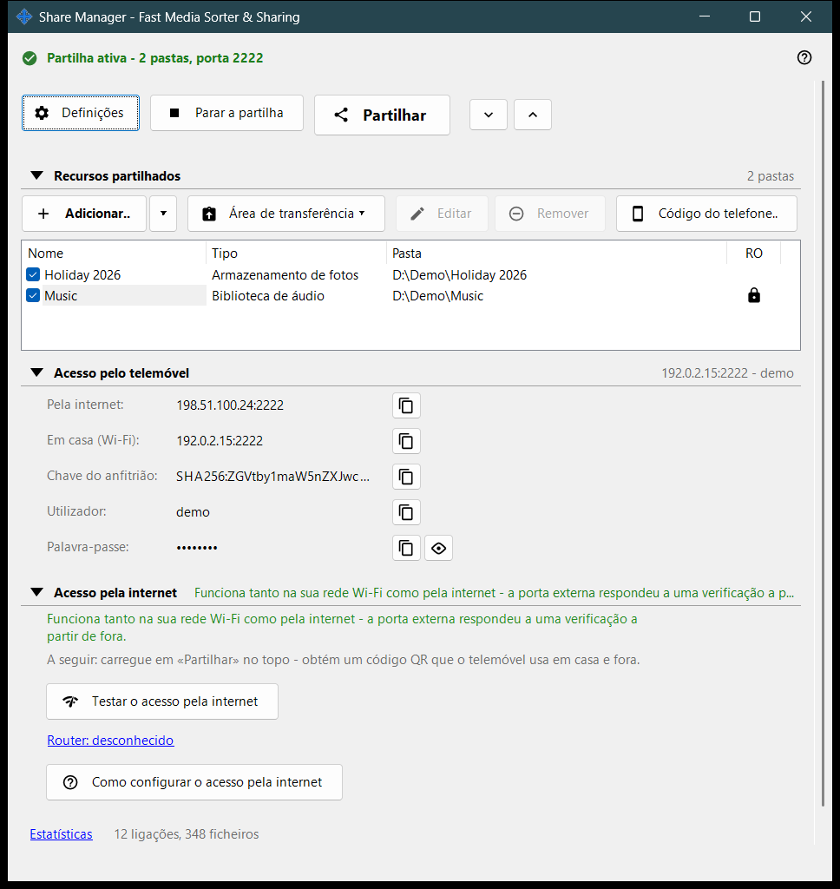
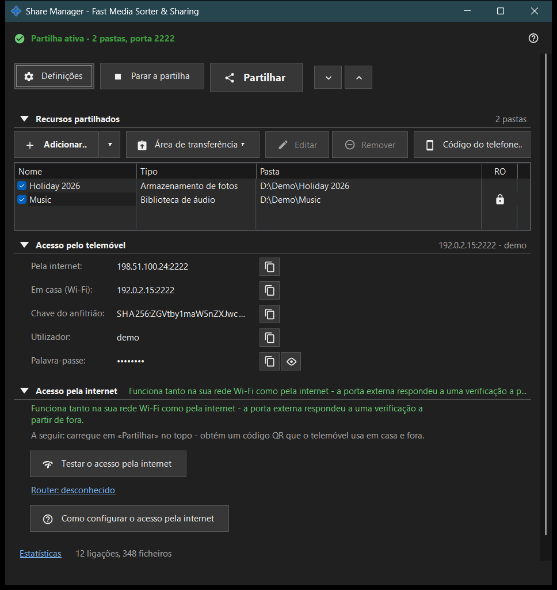

Share Manager - Fast Media Sorter & Sharing
Finalidade
A janela principal do Share Manager, o serviço local de compartilhamento e agendamento. Lista as pastas que este PC compartilha com um celular por SFTP, inicia e para o compartilhamento, fornece o código de acesso e mostra como o celular pode chegar ao PC. As operações agendadas e a conta de troca têm as suas páginas nas configurações do gerenciador. Ela se abre a partir do visualizador ou do ícone na área de notificação; ao fechar a janela, o aplicativo fica na área de notificação.


Nesta ordem
- Pressione «Adicionar..» e escolha «Pasta..» para colocar uma pasta na lista.
- Marque a pasta: só as pastas marcadas são servidas.
- Pressione «Iniciar o compartilhamento» (é preciso pelo menos uma pasta marcada).
- Pressione «Compartilhar» para obter o código QR ou o arquivo .fmscfg para o celular.
- Para acessar a partir de fora da sua rede doméstica, abra o grupo «Acesso pela internet» e use os seus dois botões.
- Pressione «Parar o compartilhamento» quando terminar.
Os elementos
Linha superior
«Configurações» abre as configurações do gerenciador. «Iniciar o compartilhamento» passa a «Parar o compartilhamento» enquanto o servidor está funcionando. «Compartilhar» abre o assistente do código de acesso e só funciona enquanto o compartilhamento está ativo; caso contrário, a sugestão pede para iniciar primeiro o servidor. «Expandir tudo» e «Recolher tudo» abrem ou fecham os grupos abaixo.
Recursos compartilhados
Uma linha por recurso, com uma caixa de verificação e as colunas Nome, Tipo e Pasta. Uma linha marcada é servida aos celulares; uma lista vazia mostra «Adicione o primeiro recurso..». Se desmarcar a última pasta marcada, a janela pergunta se deve parar o compartilhamento, porque os celulares conectados serão desconectados. Iniciar o compartilhamento sem nenhuma pasta marcada só mostra a sugestão «Primeiro adicione uma pasta e marque-a.»
Acesso do celular
Os dados de conexão de que um celular ou qualquer cliente SFTP precisa: o endereço pela internet e em casa (Wi-Fi), IPv6, a chave do host, o usuário e a senha. «Mostrar a senha» a revela e «Ocultar a senha» volta a escondê-la. O texto abaixo do grupo explica se o celular chega ao PC apenas em casa ou também a partir de fora.
Acesso pela internet
«Testar o acesso pela internet» abre a janela do teste de acesso pela internet. «Como configurar o acesso pela internet» abre o guia do roteador. O link «Roteador: ..» abre a página do próprio roteador; se nenhum foi encontrado, aparece «Roteador: desconhecido». O grupo traz um aviso: quem souber o endereço, o usuário e a senha pode chegar a todas as pastas compartilhadas; por isso, não publique o código QR nem o arquivo .fmscfg e desative o compartilhamento quando terminar.
Estatísticas
Abaixo dos grupos, um link «Estatísticas» fica junto a um resumo curto como «N conexões, M arquivos». O link abre a janela Estado do compartilhamento com os contadores completos.
Quando as funções de servidor estão desativadas
Enquanto o componente de servidor não estiver ativado, a janela mostra «As funções de servidor estão desativadas» e o botão «Ativar as funções de servidor..», que abre a janela «Ativar o compartilhamento de pastas». Se o componente de compartilhamento faltar na instalação, a janela informa isso e pede para reinstalar o aplicativo.
Configurações do gerenciador · Configurações de compartilhamento SFTP · Configurações do servidor de troca